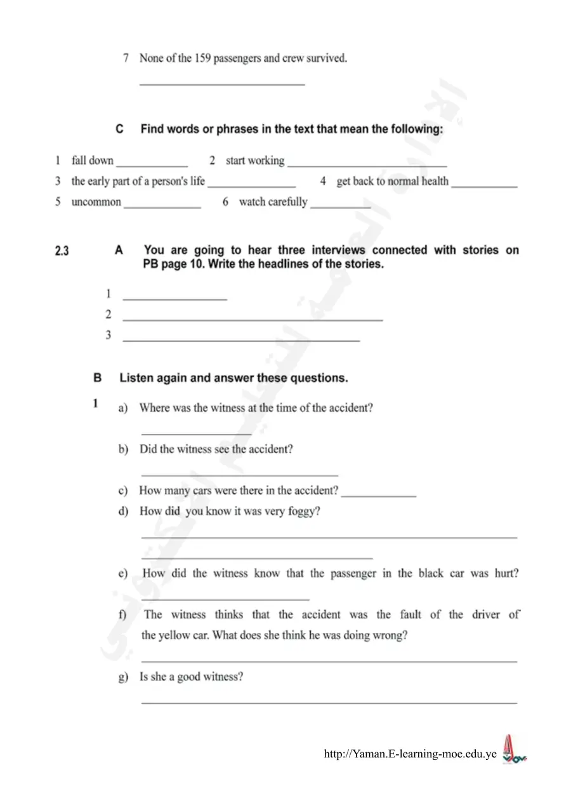

2.3 Listening to interviews (Workbook) 2.3 A You are going to hear three interviews connected with stories on PB page 10. Write the headlines of the stories. 1 ______ 2 ______ 3 ______
B Listen again and answer these questions. 1 a) Where was the witness at the time of the accident? b) Did the witness see the accident? c) How many cars were there in the accident? d) How did you know it was very foggy? e) How did the witness know that the passenger in the black car was hurt? f) The witness thinks that the accident was the fault of the driver of the yellow car. What does she think he was doing wrong? g) Is she a good witness?
2 a) How long was he in hospital? b) What was he doing when he collapsed? c) Why did he collapse? d) What had his wife said before they went walking? e) Who called the ambulance? f) What did the doctor say he needed? g) Do you think they have a good relationship? Why? Why not? 3 a) Who is Robin Crow? b) How long has he had this hobby? c) Where does the black stork usually live? d) Why is it in Britain? e) When was the last time it was seen in Britain? f) How would you describe Robin Crow? C Choose one of the stories and use your answers to write a short report in your copybook.
[
{
"num": 1,
"prompt": "1 Interview 1 (witness to two cars colliding in heavy fog): ______",
"answers": [
"Fog crash"
]
},
{
"num": 2,
"prompt": "2 Interview 2 (a tourist who collapsed in heat and went to hospital): ______",
"answers": [
"Heat wave victim recovers"
]
},
{
"num": 3,
"prompt": "3 Interview 3 (Robin Crow speaking about spotting a black stork in Britain): ______",
"answers": [
"Rare bird excitement"
]
}
][
{
"num": 1,
"question": "Which facts in 2.3 B can be verified from PB page 10 vs which require the teacher's cassette audio?",
"model_answer": "Verifiable from PB p. 10 & WB p. 16 clues: (1) Two cars (black & yellow) collided in fog near Norton. (2) Tourist Ed Shaw collapsed in hot weather while walking with his wife and stayed in hospital a week. (3) The black stork was seen in Britain for the first time in 10 years. Detailed cassette details (e.g., whether the woman was a good witness, exact ambulance caller, or Robin Crow's hobby duration) are NOT in the printed PDFs and are logged in REVIEW_NEEDED.md.",
"explain_ar": "امتنعنا عن تأليف تفاصيل من حوار مسموع غير متاح في الملفات الرسمية التزاماً بالقاعدة الذهبية 7، وتبقى الأسئلة الـ 20 كاملة لإجرائها مع المعلّم عند سماع الشريط."
}
][
{
"label_ar": "1) اختر عنوان الخبر (Headline)",
"placeholder": "Heat wave victim recovers"
},
{
"label_ar": "2) اكتب الجملة الافتتاحية الموجزة (من / ماذا / أين / متى)",
"placeholder": "American tourist Ed Shaw came out of hospital yesterday after collapsing in unusually hot weather a week ago."
},
{
"label_ar": "3) أضف تفاصيل الحدث واقتباساً مباشراً بعلامات التنصيص",
"placeholder": "'I nearly died,' the tourist said. 'But I feel great now.'"
},
{
"label_ar": "4) جملة ختامية للنتيجة أو النصيحة",
"placeholder": "Doctors advised visitors to drink plenty of water during hot days."
}
]{
"wb_ocr_vs_image": "قُورنت صفحتا WB ص 15–16 مع tesseract.js eng: أخرجت OCR رموزاً مغلوطة لترقيم الأحرف والأرقام ('c)' → '¢)', 'a)' → '3)') وجرى تصحيحها كلها بصرياً عبر wb-016.png وwb-017.png؛ وسُجّل غياب الشريط الصوتي للمقابلات في REVIEW_NEEDED.md."
}